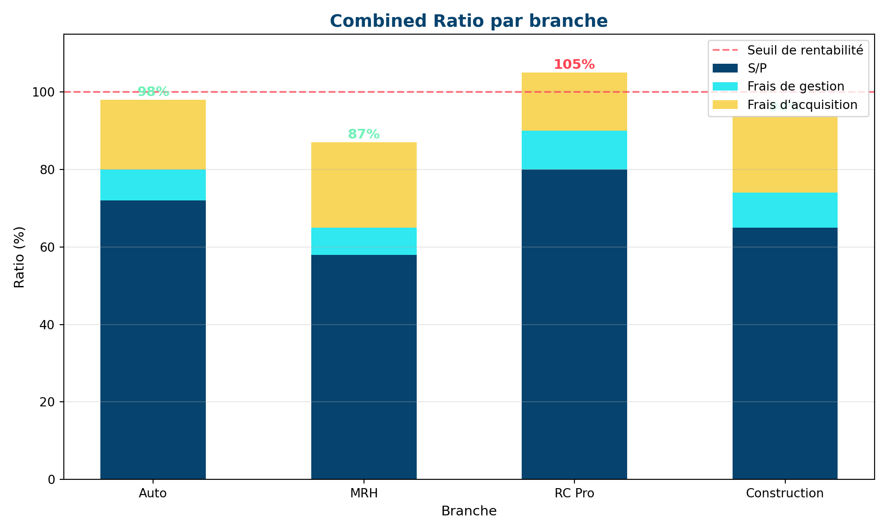

(0.0, 115.0)
S/P, combined ratio, CLV et tableaux de bord
François Boussengui
25 mars 2026
📚 Prérequis : Modules 4-10 (sinistralité, tarification)
⏱️ Temps estimé : 3 heures
| Ratio | Formule | Usage |
|---|---|---|
| S/P brut | Charge brute / Primes brutes | Performance du portefeuille direct |
| S/P net de réassurance | Charge nette / Primes nettes | Performance après cession |
| S/P comptable | Charge exercice / Primes acquises | Résultat comptable de l’année |
| S/P par génération | Charge ultime / Primes acquises | Analyse du risque par année de survenance |
💡 Point clé
Le S/P brut reflète la qualité technique du portefeuille. Le S/P net mesure le résultat réel après réassurance. Un portefeuille peut avoir un S/P brut de 110% (perte) mais un S/P net de 85% (bénéfice) grâce à la réassurance qui absorbe les sinistres graves.
Le S/P ne suffit pas — il faut aussi intégrer les frais :
\[\text{Combined Ratio} = \underbrace{\frac{\text{Sinistres}}{\text{Primes}}}_{\text{S/P}} + \underbrace{\frac{\text{Frais}}{\text{Primes}}}_{\text{Ratio de frais}}\]
| Composante | Calcul | Cible |
|---|---|---|
| S/P | Charge sinistres / Primes | 65-75% |
| Ratio de frais de gestion | Frais internes / Primes | 5-10% |
| Ratio de frais d’acquisition | Commissions / Primes | 15-25% |
| Combined Ratio | Total | < 100% |
(0.0, 115.0)
⚠️ Combined Ratio > 100%
Un CR > 100% signifie que l’activité technique est déficitaire : les primes ne couvrent pas les sinistres + frais. L’assureur peut quand même être rentable grâce aux produits financiers (placement des primes encaissées avant paiement des sinistres), mais c’est une situation fragile.
La CLV mesure la valeur totale qu’un client apporte pendant toute la durée de sa relation :
\[\text{CLV} = \sum_{t=1}^{T} \frac{\text{Marge}_t}{(1+r)^t} \times p_t\]
où \(p_t\) = probabilité que le client soit encore là en année \(t\) et \(r\) = taux d’actualisation.
📝 Calcul simplifié
Un client auto paye 500 €/an de prime, avec un combined ratio de 95% (marge = 5% = 25 €/an) et un taux de rétention de 85% par an :
\[\text{CLV} = 25 \times \frac{0.85}{1 - 0.85} = 25 \times 5.67 = 142 \text{ €}\]
Ce client vaut 142 € actualisés. Si l’acquisition coûte 100 €, il est rentable. Si elle coûte 200 €, il faut revoir le canal d’acquisition ou la politique de rétention.
💡 La CLV change la perspective
Sans CLV, un client qui coûte 100 € à acquérir et génère 25 €/an de marge semble peu rentable. Avec CLV, on comprend que sur sa durée de vie (5-7 ans en moyenne), il rapporte bien plus que son coût d’acquisition. C’est un outil de pilotage stratégique.
| Niveau | KPI | Fréquence | Seuil d’alerte |
|---|---|---|---|
| Portefeuille | Combined ratio | Mensuel | > 100% |
| Portefeuille | S/P par génération | Trimestriel | > 80% |
| Commercial | Taux de résiliation | Mensuel | > 15% |
| Commercial | Nouvelles affaires (mix risque) | Mensuel | S/P NA > S/P stock |
| Technique | Fréquence de sinistres | Mensuel | Hausse > 5% vs N-1 |
| Technique | Sévérité moyenne | Trimestriel | Hausse > inflation + 3% |
| Financier | CLV moyenne | Trimestriel | Baisse > 10% |
Un bon système d’alertes :
Réponse : Non. Le CR ne mesure que la rentabilité technique. L’assureur peut être globalement rentable grâce aux produits financiers (placement des provisions). Mais c’est une situation fragile : si les taux baissent ou si la sinistralité se dégrade encore, les produits financiers ne compenseront plus.
Réponse : La CLV quantifie ce que l’on perd quand un client part. Si la CLV d’un bon client est de 500 € et qu’une action de rétention coûte 50 €, l’investissement est largement rentable. Sans CLV, on ne sait pas combien investir pour retenir un client.
Réponse : Le taux de résiliation par profil de risque. Si les bons clients partent (résiliants avec un S/P < moyenne du portefeuille), c’est le signal le plus précoce d’anti-sélection. Le S/P lui-même est un indicateur retardé — il ne se dégrade qu’après le départ des bons risques.
Réponse : S/P par exercice = tous les flux comptables de l’année (paiements + variations réserves de toutes générations). S/P par génération = charge ultime des sinistres d’une année de survenance / primes acquises de cette année. La génération isole le risque réel, l’exercice peut être trompeur (boni/mali sur anciennes générations).
| Terme | Définition |
|---|---|
| Combined ratio | S/P + ratio de frais — mesure de rentabilité technique globale |
| CLV | Customer Lifetime Value — valeur actualisée d’un client |
| Taux de rétention | % de clients qui renouvellent leur contrat |
| KPI | Key Performance Indicator — indicateur clé de performance |
| Produits financiers | Revenus des placements des provisions |